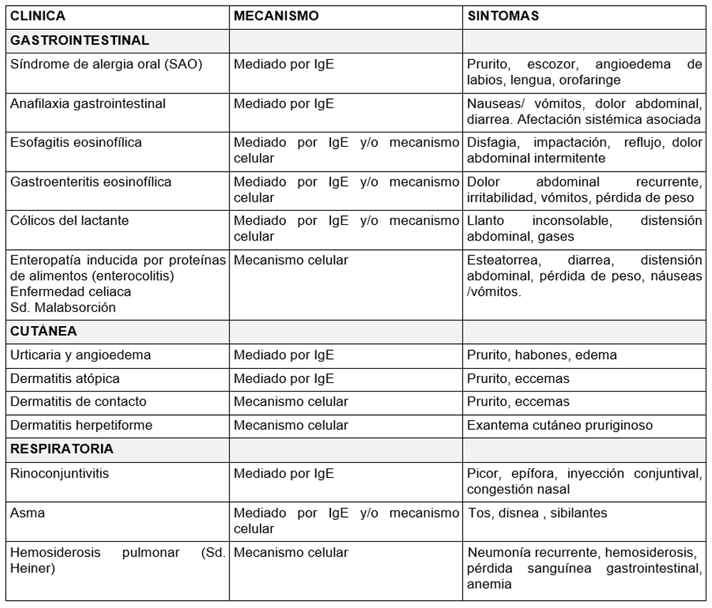

<div class="pages">
  <div data-page="projects" class="page no-toolbar no-navbar">
    <div class="page-content">
    
     <div class="navbarpages">
       <div class="navbar_home_link"><a href="toogle.html"></a></div>
       <div class="navbar_page_center"><b>Especialidades</b></div>
       <div class="menu_open_icon_white"><a href="#" class="open-panel"></a></div>
     </div>
     <div id="pages_maincontent">

          <h2 class="page_subtitle">Alergia a alimentos</h2>
          <p><b>Autor/a:</b> Rocío Candón Morillo, Alergología, Hospital La Mancha-Centro, Alcázar de San Juan (C. Real)</p>
          <div class="page_single">         
              <div class="buttons-row">
                    <a href="#tab3" class="tab-link active button">Info</a>
                    <a href="#tab5" class="tab-link button">Clasificaci&oacute;n</a>
                    <a href="#tab6" class="tab-link button">Clínica</a>
              </div>
              <div class="separadormenu_div"></div>
              <div class="buttons-row">
                    <a href="#tab7" class="tab-link button">Tratamiento</a>
                    <a href="#tab8" class="tab-link button">Bibliografía</a>
              </div>
              
              <div class="tabs-simple">
                    <div class="tabs">
                          <div id="tab3" class="tab active">
                          		<br />
                                <h4>Información</h4>
                                <p class="nojustify">
                                Hay que diferenciar entre alergia e intolerancia.<br /><br />

                                &bull;&nbsp;<b>Alergia:</b> reacción adversa a alimentos mediada por mecanismos inmunológicos. Los alimentos más frecuentemente implicados son:<br /><br />
                                &nbsp;&nbsp;&nbsp;&nbsp;&nbsp;&omicron;&nbsp; <u>Niños de 1-5 años:</u> leche, huevo y pescados<br />
                                &nbsp;&nbsp;&nbsp;&nbsp;&nbsp;&omicron;&nbsp;<u>Niños > 5 años:</u> legumbres, frutas, frutos secos y mariscos<br />
                                &nbsp;&nbsp;&nbsp;&nbsp;&nbsp;&omicron;&nbsp;<u>Adultos:</u> frutas, frutos secos, pescados, mariscos, legumbres y cereales<br /><br />
                                
                                &bull;&nbsp;<b>Intolerancia:</b> respuesta fisiológicas anormales y reproducibles con la ingesta de alimentos en el que no existe ningún mecanismo inmunológico implicado. Son reacciones de tipo: <br /><br />
                                &nbsp;&nbsp;&nbsp;&nbsp;&nbsp;&omicron;&nbsp;<u>Enzimático:</u> déficit lactasa, déficit galactasa-1fosfatouridiltransferasa (galactosemia),déficit glucosa-6-fosfatodeshidrogenasa (favismo)....<br />
                                &nbsp;&nbsp;&nbsp;&nbsp;&nbsp;&omicron;&nbsp;<u>Farmacológico:</u> alimentos con metilxantinas, aminas biógenas....<br />
                                &nbsp;&nbsp;&nbsp;&nbsp;&nbsp;&omicron;&nbsp;<u>Metabólico:</u> intoxicación ácida glícirrico (regaliz)<br />
                                &nbsp;&nbsp;&nbsp;&nbsp;&nbsp;&omicron;&nbsp;<u>Tóxico:</u> alimentos contaminados, toxinas vegetales, animas microbiológicas....

                                </p>
                          </div>

    						<div id="tab5" class="tab">
                          		<br />
                                <h4>Clasificaci&oacute;n</h4>
                                <p class="justify">
                                	Clasificación de las reacciones adversas a alimentos de la Comisión de Nomenclaturas de European Academy of Allergology and Clinical Inmunology, refrendada por la World Allergy Organization 1<br /><br />
                                    <br /><br />
                                </p>
                                <p class="nojustify">
                                    <b>Leche</b><br /><br />

                                    &bull;&nbsp;Alérgeno alimentario más frecuente<br />
                                    &bull;&nbsp;Principales fracciones proteicas: &szlig;-lactoglobulina, &prop;-lactoalbúmina, caseína y seroalbúmina<br />
                                    &bull;&nbsp;Los pacientes alérgicos a la leche de vaca deben evitar consumir leches de otros mamíferos (cabra, oveja, búfala...) <br />
                                    &bull;&nbsp;Algoritmo terapéutico para la alimentación de los lactantes afectos de alergia a las proteínas de la leche de vaca2:
<br /><br />
                                    
                                </p>
                                <p class="nojustify">
                                    <b>Huevo</b><br /><br />

                                    &bull;&nbsp;2ª alérgeno alimentario más frecuente<br /><br />
                                    &bull;&nbsp;Principales fracciones proteicas: ovoalbúmina, ovomucoide, ovotransferrina, lisozima<br />
                                    &bull;&nbsp;50% prevalencia en niños con alergia a la leche<br />
                                    &bull;&nbsp;Evitar el consumo de huevos de otras aves (codorniz, pato, ganso...)<br />
                                    &bull;&nbsp;Se encuentra como alérgeno oculto en alimentos (trazas no declaradas) y cosméticos (champú, gel, etc.)<br />
                                    &bull;&nbsp;Medicamentos que contienen huevo:<br />
                                    &nbsp;&nbsp;&nbsp;&nbsp;&omicron;&nbsp;Vacuna de la gripe: segura en niños que no presentan anafilaxia con la toma huevo<br />
                                    &nbsp;&nbsp;&nbsp;&nbsp;&omicron;&nbsp;Vacuna triple vírica: se puede dar a los niños alérgicos al huevo en su centro de vacunación habitual<br />
                                    &nbsp;&nbsp;&nbsp;&nbsp;&omicron;&nbsp;Vacuna de la fiebre amarilla: contiene virus vivos atenuados, debe administrarse bajo supervisión de un especialista<br />
                                    &nbsp;&nbsp;&nbsp;&nbsp;&omicron;&nbsp;Lecitina: puede venir de huevo o de soja<br />
                                    &nbsp;&nbsp;&nbsp;&nbsp;&omicron;&nbsp;Propofol: segura en alérgicos al huevo<br />
                                    &nbsp;&nbsp;&nbsp;&nbsp;&omicron;&nbsp;Emulsión de lípidos para la nutrición parenteral<br />
                                    &nbsp;&nbsp;&nbsp;&nbsp;&omicron;&nbsp;Lisozima (se obtiene de clara de huevo, aunque también puede obtenerse a través de biofermentación): Rinodexa pediátrico®, lisozima Chiesi®, Lizipaina®, Trofalgon cápsulas®<br />
                                    &nbsp;&nbsp;&nbsp;&nbsp;&omicron;&nbsp;Contienen ovoalbúmina: Ferroprotina®, Kilor® y Profer® 

                                </p>
                                
                                <p class="nojustify">
                                	<br />
                                    <b>Pescados</b><br /><br />

                                    &bull;&nbsp;3º alérgeno alimentario más frecuente en la infancia<br />
                                    &nbsp;&nbsp;&nbsp;&nbsp;&omicron;&nbsp;Más frecuentes: Gadiformes (merluza, pescadilla) y Pleuronectiformes (sobre todo el gallo)<br />
                                    &nbsp;&nbsp;&nbsp;&nbsp;&omicron;&nbsp;Menos frecuentes: Tunidae (atún, caballa) y Xifidae (pez espada), pueden ser tolerados por pacientes alérgicos a otras familias de alimentos<br />
                                    &bull;&nbsp;Pueden estar sensibilizados a una o varias familias de alimentos, con o sin reactividad clínica
                                </p>
                                
                                <p class="nojustify">
                                	<br />
                                    <b>Frutas</b><br /><br />

                                    &bull;&nbsp;Es la alergia más frecuente en pacientes sensibilizados a pólenes<br />
									&bull;&nbsp;Alérgeno principal: rosáceas (melocotón, nectarina, albaricoque, cereza, ciruela)

                                </p>
                                
                                <p class="nojustify">
                                	<br />
                                    <b>Frutos secos</b><br /><br />

                                    &bull;&nbsp;Más frecuente a almendra y menos al pistacho en España<br />
									&bull;&nbsp;El cacahuete presenta reactividad cruzada con leguminosas (soja y guisantes)

                                </p>
                                <p class="nojustify">
                                	<br />
                                    <b>Cereales</b><br /><br />

                                    &bull;&nbsp;El trigo es el cereal más alergénico; el maíz, poco frecuente; la cebada y la malta, infrecuentes <br />
									&bull;&nbsp;Proteínas alergénicas principales: gliadina y albúmina
                                </p>
                                <p class="nojustify">
                                	<br />
                                    <b>Legumbres</b><br /><br />

                                    &bull;&nbsp;5ª causa más frecuente en alergia pediátrica<br />
									&bull;&nbsp;Más frecuente a la lenteja, seguida del garbanzo
                                </p>
                                <p class="nojustify">
                                	<br />
                                    <b>Mariscos</b><br /><br />

                                    &bull;&nbsp;Alimento más implicado: gamba (tiene reactividad cruzada con langostino y cangrejo de mar)<br />
									&bull;&nbsp;El pulpo puede tener reactividad cruzada con otros cefalópodos y con el mejillón
                                </p>
                                <p class="nojustify">
                                	<br />
                                    <b>Hortaliza</b><br /><br />

                                    &bull;&nbsp;Alergia poco frecuente <br />
                                    &bull;&nbsp;El tomate es la verdura más implicada <br />
                                    &bull;&nbsp;Suele estar asociada a sensibilización a pólenes
                                </p>
                                <p class="nojustify">
                                	<br />
                                    <b>Carnes</b><br /><br />

                                    &bull;&nbsp;Alergia poco común, siendo las sensibilizaciones más frecuentes al cerdo y, la menos, al cordero<br />
									&bull;&nbsp;La carne de vaca contiene seroalbúmina, que puede producir clínica en pacientes alérgicos a la leche de vaca
                                </p>
                                <p class="nojustify">
                                	<br />
                                    <b>Síndromes de reactividad clínica</b><br /><br />

									Es la sensibilización primaria a un alérgeno inhalante (polen, ácaros, epitelios) y secundaria a un alimento:<br />
                                    &nbsp;&nbsp;&nbsp;&nbsp;&nbsp;&bull;&nbsp;Síndrome polen-frutas<br />
                                    &nbsp;&nbsp;&nbsp;&nbsp;&nbsp;&bull;&nbsp;Síndrome látex-frutas<br />
                                    &nbsp;&nbsp;&nbsp;&nbsp;&nbsp;&bull;&nbsp;Síndrome ave-huevo<br />
                                    &nbsp;&nbsp;&nbsp;&nbsp;&nbsp;&bull;&nbsp;Síndrome ácaros-mariscos 

                                </p>
                          </div>
                          <div id="tab6" class="tab">
                          		<br />
                                <h4>Clínica</h4>
                                <p class="nojustify">
                                    
                                </p>
                          </div> 
                          
                          <div id="tab7" class="tab">
                          		<br />
                                <h4>Tratamiento</h4>
                                <p class="nojustify">
                                &bull;&nbsp;Dieta de evitación de los alimentos implicados <br />
                                &bull;&nbsp;Medicación de rescate:  <br />
                                &nbsp;&nbsp;&nbsp;&nbsp;&omicron;&nbsp;Antihistamínicos<br /> 
                                &nbsp;&nbsp;&nbsp;&nbsp;&omicron;&nbsp;Corticoides<br />
                                &nbsp;&nbsp;&nbsp;&nbsp;&omicron;&nbsp;Adrenalina en autoinyector (AIA): 0,15 ml (niños) y 0,30 ml (adultos)<br />
                                &bull;&nbsp;Inducción de tolerancia / desensibilización a los alimentos (leche/huevo/cereales/frutos secos/pescados)

                                </p>
                          </div> 
                          <div id="tab8" class="tab">
                          		<br />
                                <h4>Bibliografía</h4>
                                <p class="nojustify">
                                1.	Johansson SG, Hourihane JO, Bousquet J, Bruijnzeel-Koomen C, Dreborg S, Haahtela T, et al. A revised nomenclature for allergy: an EAACI position statement from the EAACI nomenclature task force. Allergy 2001;56(9):813-24.<br /><br />
								2.	Recomendaciones y algoritmos de práctica clínica de la Sociedad Española de Alergología e Inmunología Clínica. SEAIC 2010, 21-22.
                                </p>
                          </div> 
                    </div>
              </div>        
          </div>     
      </div>  
    </div>
  </div>
</div>